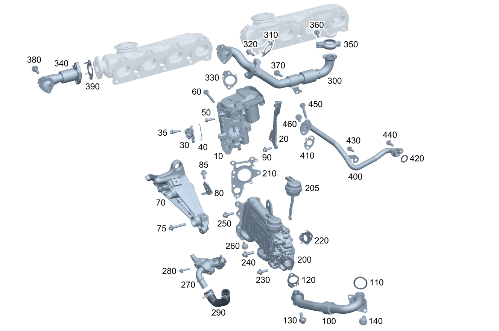

| № | Артикул | Название | Кол. | Примечание |
|---|---|---|---|---|
| 10 | A 654 140 00 60 | Клапан рециркуляции ОГ (RECIRCULATION VALVE) | 1 | |
| 10 | A 654 140 69 00 | Клапан рециркуляции ОГ (RECIRCULATION VALVE) | 1 | |
| 10 | A 654 140 80 00 | Клапан рециркуляции ОГ (RECIRCULATION VALVE) | 1 | |
| 10 | A 654 140 44 01 | Клапан рециркуляции ОГ (RECIRCULATION VALVE) | 1 | |
| 10 | A 654 140 69 00 | Клапан рециркуляции ОГ (RECIRCULATION VALVE) | 1 | |
| 10 | A 654 140 43 01 | Клапан рециркуляции ОГ (RECIRCULATION VALVE) | 1 | |
| 20 | A 654 140 00 40 | Держатель (HOLDER) | 1 | Охладитель ОГ на блоке цилиндров двигателя |
| 20 | A 654 140 16 00 | Держатель (HOLDER) | 1 | Охладитель ОГ на блоке цилиндров двигателя |
| 30 | A 654 140 02 44 | Корпус фланца (HOUSING INTERMED. FLANGE) | 1 | Система выпуска ОГ к контуру рециркуляции ОГ низкого давления |
| 30 | A 654 140 70 00 | Корпус фланца (HOUSING INTERMED. FLANGE) | 1 | Система выпуска ОГ к контуру рециркуляции ОГ низкого давления |
| 30 | A 654 140 03 44 | Промежуточный фланец (INTERMEDIATE FLANGE) | 1 | Система выпуска ОГ к контуру рециркуляции ОГ низкого давления |
| 35 | N 910143 006002 | Винт с 6-гр. глвк (HEXALOBULAR SCREW) | 2 | Промежуточный фланец к клапану рециркуляции ОГ; M6X20 |
| 40 | A 654 142 15 80 | Уплотнение фланца (SEAL FOR OVAL FLANGE) | 1 | Промежуточный фланец к клапану рециркуляции ОГ |
| 40 | A 654 142 37 00 | Уплотнение фланца (SEAL FOR OVAL FLANGE) | 1 | Промежуточный фланец к клапану рециркуляции ОГ |
| 50 | N 910143 006002 | Винт с 6-гр. глвк (HEXALOBULAR SCREW) | 2 | Клапан рециркуляции ОГ к кронштейну; M6X20 |
| 60 | N 910143 006008 | Винт с 6-гр. глвк (HEXALOBULAR SCREW) | 1 | Охладитель ОГ к клапану рециркуляции ОГ; M6X60 |
| 60 | N 000000 003648 | Винт с 6-гр. глвк (HEXALOBULAR SCREW) | 3 | Охладитель ОГ к клапану рециркуляции ОГ; M6X25 |
| 60 | N 000000 003648 | Винт с 6-гр. глвк (HEXALOBULAR SCREW) | 2 | Охладитель ОГ к клапану рециркуляции ОГ; M6X25 |
| 70 | A 654 140 02 40 | Держатель (HOLDER) | 1 | Охладитель ОГ на блоке цилиндров двигателя |
| 75 | N 910105 008019 | Винт с 6-гранной головкой (HEXAGON HEAD BOLT) | 3 | M8X50 |
| 80 | A 654 140 04 40 | Держатель (HOLDER) | 1 | |
| 80 | A 654 140 26 02 | Держатель (HOLDER) | 1 | |
| 80 | A 654 140 30 05 | Держатель (HOLDER) | 1 | |
| 85 | N 910143 006000 | Винт с 6-гр. глвк (HEXALOBULAR SCREW) | 1 | M6X12 |
| 90 | N 910143 006002 | Винт с 6-гр. глвк (HEXALOBULAR SCREW) | 2 | Держатель к блоку цилиндров; M6X20 |
| 100 | A 654 140 02 60 | Труб. рецирк. ОГ (EXHAUST GAS RECIRC. LINE) | 1 | Охладитель контура высокого давления к трубопроводу наддувочного воздуха |
| 100 | A 654 140 14 00 | Труб. рецирк. ОГ (EXHAUST GAS RECIRC. LINE) | 1 | Охладитель контура высокого давления к трубопроводу наддувочного воздуха |
| 100 | A 654 140 08 02 | Труб. рецирк. ОГ (EXHAUST GAS RECIRC. LINE) | 1 | Охладитель контура высокого давления к трубопроводу наддувочного воздуха |
| 100 | A 654 140 08 60 | Труб. рецирк. ОГ (EXHAUST GAS RECIRC. LINE) | 1 | Охладитель контура высокого давления к трубопроводу наддувочного воздуха |
| 100 | A 654 140 06 02 | Труб. рецирк. ОГ (EXHAUST GAS RECIRC. LINE) | 1 | Охладитель контура высокого давления к трубопроводу наддувочного воздуха |
| 100 | A 654 140 06 02 | Труб. рецирк. ОГ (EXHAUST GAS RECIRC. LINE) | 1 | Охладитель контура высокого давления к трубопроводу наддувочного воздуха |
| 100 | A 654 140 08 60 | Труб. рецирк. ОГ (EXHAUST GAS RECIRC. LINE) | 1 | Охладитель контура высокого давления к трубопроводу наддувочного воздуха |
| 100 | A 654 140 17 60 | Труб. рецирк. ОГ (EXHAUST GAS RECIRC. LINE) | 1 | Охладитель контура высокого давления к трубопроводу наддувочного воздуха |
| 100 | A 654 140 07 02 | Труб. рецирк. ОГ (EXHAUST GAS RECIRC. LINE) | 1 | Охладитель контура высокого давления к трубопроводу наддувочного воздуха |
| 100 | A 654 140 90 01 | Труб. рецирк. ОГ (EXHAUST GAS RECIRC. LINE) | 1 | Охладитель контура высокого давления к трубопроводу наддувочного воздуха |
| 100 | A 654 140 88 01 | Труб. рецирк. ОГ (EXHAUST GAS RECIRC. LINE) | 1 | Охладитель контура высокого давления к трубопроводу наддувочного воздуха |
| 100 | A 654 140 90 01 | Труб. рецирк. ОГ (EXHAUST GAS RECIRC. LINE) | 1 | Охладитель контура высокого давления к трубопроводу наддувочного воздуха |
| 100 | A 654 140 90 01 | Труб. рецирк. ОГ (EXHAUST GAS RECIRC. LINE) | 1 | Охладитель контура высокого давления к трубопроводу наддувочного воздуха |
| 110 | A 027 997 66 45 | - Кольцевая прокладка (O-RING) | 1 | |
| 110 | A 027 997 66 45 | - Кольцевая прокладка (O-RING) | 1 | |
| 110 | A 000 997 61 14 | - Кольцевая прокладка (O-RING) | 1 | |
| 110 | A 000 997 61 14 | - Кольцевая прокладка (O-RING) | 1 | |
| 120 | A 654 142 11 80 | - Уплотнение фланца (SEAL FOR OVAL FLANGE) | 1 | |
| 120 | A 654 142 19 00 | - Уплотнение фланца (SEAL FOR OVAL FLANGE) | 1 | |
| 120 | A 654 142 87 00 | - Уплотнение фланца (SEAL FOR OVAL FLANGE) | 1 | |
| 130 | N 910143 006002 | Винт с 6-гр. глвк (HEXALOBULAR SCREW) | 2 | Трубопровод рециркуляции ОГ к охладителю ОГ; M6X20 |
| 140 | N 910143 006000 | Винт с 6-гр. глвк (HEXALOBULAR SCREW) | 2 | Трубопровод рециркуляции ОГ к трубопроводу наддувочного воздуха; M6X12 |
| 140 | N 910143 006002 | Винт с 6-гр. глвк (HEXALOBULAR SCREW) | 2 | Трубопровод рециркуляции ОГ к трубопроводу наддувочного воздуха; M6X20 |
| 200 | A 654 140 27 00 | Охладитель рецирк. ОГ (EXH. GAS RECIRC. COOLER) | 1 | |
| 200 | A 654 140 17 00 | Охладитель рецирк. ОГ (EXH. GAS RECIRC. COOLER) | 1 | |
| 200 | A 654 140 76 00 | Охладитель рецирк. ОГ (EXH. GAS RECIRC. COOLER) | 1 | |
| 200 | A 654 140 91 00 | Охладитель рецирк. ОГ (EXH. GAS RECIRC. COOLER) | 1 | |
| 200 | A 654 140 33 01 | Охладитель рецирк. ОГ (EXH. GAS RECIRC. COOLER) | 1 | |
| 200 | A 654 140 03 75 | Охладитель рецирк. ОГ (EXH. GAS RECIRC. COOLER) | 1 | |
| 200 | A 654 140 54 02 | Охладитель рецирк. ОГ (EXH. GAS RECIRC. COOLER) | 1 | |
| 200 | A 654 140 75 00 | Охладитель рецирк. ОГ (EXH. GAS RECIRC. COOLER) | 1 | |
| 200 | A 654 140 90 00 | Охладитель рецирк. ОГ (EXH. GAS RECIRC. COOLER) | 1 | |
| 205 | A 654 141 41 00 | - Вакуумная камера (VACUUM CELL) | 1 | |
| 205 | A 654 141 42 00 | - Вакуумная камера (VACUUM CELL) | 1 | |
| 210 | A 654 142 05 00 | Многоканальное уплотнение (MULTI-HOLE SEAL) | 1 | Между клапаном рециркуляции ОГ и охладителем ОГ |
| 220 | A 654 142 06 00 | Многоканальное уплотнение (MULTI-HOLE SEAL) | 1 | Между охладителем ОГ и блоком цилиндров |
| 220 | A 654 142 25 00 | Многоканальное уплотнение (MULTI-HOLE SEAL) | 1 | Между охладителем ОГ и блоком цилиндров |
| 230 | N 910143 006002 | Винт с 6-гр. глвк (HEXALOBULAR SCREW) | 1 | Охладитель ОГ на блоке цилиндров двигателя; M6X20 |
| 240 | N 910143 006002 | Винт с 6-гр. глвк (HEXALOBULAR SCREW) | 2 | Охладитель ОГ на блоке цилиндров двигателя; M6X20 |
| 240 | N 910143 006002 | Винт с 6-гр. глвк (HEXALOBULAR SCREW) | 2 | Охладитель ОГ на блоке цилиндров двигателя; M6X20 |
| 240 | N 910143 006002 | Винт с 6-гр. глвк (HEXALOBULAR SCREW) | 1 | Охладитель ОГ на блоке цилиндров двигателя; M6X20 |
| 250 | N 910143 006002 | Винт с 6-гр. глвк (HEXALOBULAR SCREW) | 1 | Охладитель ОГ к проушине для вывешивания; M6X20 |
| 260 | N 910143 006002 | Винт с 6-гр. глвк (HEXALOBULAR SCREW) | 4 | Охладитель ОГ к клапану рециркуляции ОГ; M6X20 |
| 270 | A 654 142 09 00 | Держатель (HOLDER) | 1 | Охладитель ОГ на блоке цилиндров двигателя |
| 270 | A 654 142 64 00 | Держатель (HOLDER) | 1 | Охладитель ОГ на блоке цилиндров двигателя |
| 270 | A 654 140 03 40 | Держатель (HOLDER) | 1 | Охладитель ОГ на блоке цилиндров двигателя |
| 280 | N 000000 003648 | Винт с 6-гр. глвк (HEXALOBULAR SCREW) | 2 | Держатель к блоку цилиндров; M6X25 |
| 280 | N 000000 003648 | Винт с 6-гр. глвк (HEXALOBULAR SCREW) | 1 | Держатель к блоку цилиндров; M6X25 |
| 280 | N 910143 006006 | Винт с 6-гр. глвк (HEXALOBULAR SCREW) | 3 | Держатель к крышке картера цепи; M6X40 |
| 280 | N 910143 006004 | Винт с 6-гр. глвк (HEXALOBULAR SCREW) | 2 | Держатель к блоку цилиндров; M6X30 |
| 290 | A 654 203 00 82 | Шланг системы охлаждения (COOLANT HOSE) | 1 | Охладитель ОГ к дополнительному кронштейну |
| 300 | A 654 140 01 60 | Труб. рецирк. ОГ (EXHAUST GAS RECIRC. LINE) | 1 | От выпускного коллектора к клапану рециркуляции ОГ |
| 300 | A 654 140 30 00 | Труб. рецирк. ОГ (EXHAUST GAS RECIRC. LINE) | 1 | От выпускного коллектора к клапану рециркуляции ОГ |
| 300 | A 654 140 09 60 | Труб. рецирк. ОГ (EXHAUST GAS RECIRC. LINE) | 1 | От выпускного коллектора к клапану рециркуляции ОГ |
| 300 | A 654 140 79 01 | Труб. рецирк. ОГ | 1 | От выпускного коллектора к клапану рециркуляции ОГ |
| 300 | A 654 140 91 02 | Труб. рецирк. ОГ (EXHAUST GAS RECIRC. LINE) | 1 | От выпускного коллектора к клапану рециркуляции ОГ |
| 300 | A 654 140 92 02 | Труб. рецирк. ОГ (EXHAUST GAS RECIRC. LINE) | 1 | От выпускного коллектора к клапану рециркуляции ОГ |
| 300 | A 654 140 60 03 | Труб. рецирк. ОГ (EXHAUST GAS RECIRC. LINE) | 1 | От выпускного коллектора к клапану рециркуляции ОГ |
| 310 | A 654 142 14 80 | - Уплотнение фланца (SEAL FOR OVAL FLANGE) | 1 | Трубопровод рециркуляции ОГ |
| 310 | A 654 142 39 00 | - Уплотнение фланца (SEAL FOR OVAL FLANGE) | 1 | Трубопровод рециркуляции ОГ |
| 320 | A 000 990 69 03 | Винт Torx External (HEXALOBULAR HEAD SCREW) | 2 | Трубопровод рециркуляции ОГ; M6X16 |
| 320 | A 000 990 69 03 | Винт Torx External (HEXALOBULAR HEAD SCREW) | 2 | Трубопровод рециркуляции ОГ; M6X16 |
| 320 | A 000 990 69 03 | Винт Torx External (HEXALOBULAR HEAD SCREW) | 2 | Трубопровод рециркуляции ОГ; M6X16 |
| 330 | A 654 142 00 80 | - Уплотнение фланца (SEAL FOR OVAL FLANGE) | 1 | К клапану рециркуляции ОГ |
| 330 | A 654 142 17 00 | - Уплотнение фланца (SEAL FOR OVAL FLANGE) | 1 | К клапану рециркуляции ОГ |
| 340 | A 654 140 16 60 | Труб. рецирк. ОГ (EXHAUST GAS RECIRC. LINE) | 1 | От выпускного коллектора к клапану рециркуляции ОГ |
| 340 | Q 0000000001 | ВАЖНАЯ ИНФОРМАЦИЯ | 1 | Деталь см.: 49/218 |
| 350 | A 000 995 50 03 | Трубн. хомут сист.вып. ОГ (PIPE CLAMP, EXHAUST SYS.) | 1 | Выпускной коллектор к трубопроводу рециркуляции ОГ |
| 350 | A 000 995 39 04 | Трубн. хомут сист.вып. ОГ (PIPE CLAMP, EXHAUST SYS.) | 1 | Выпускной коллектор к трубопроводу рециркуляции ОГ |
| 350 | A 003 995 30 02 | Трубн. хомут сист.вып. ОГ (PIPE CLAMP, EXHAUST SYS.) | 1 | Выпускной коллектор к трубопроводу рециркуляции ОГ |
| 360 | A 003 990 47 03 | Винт Torx External (HEXALOBULAR HEAD SCREW) | 1 | Хомут; M6X25 |
| 370 | N 910143 006002 | Винт с 6-гр. глвк (HEXALOBULAR SCREW) | 1 | Держатель к блоку цилиндров; M6X20 |
| 370 | N 910143 006002 | Винт с 6-гр. глвк (HEXALOBULAR SCREW) | 2 | Держатель к блоку цилиндров; M6X20 |
| 370 | N 910143 006002 | Винт с 6-гр. глвк (HEXALOBULAR SCREW) | 4 | Держатель к блоку цилиндров; M6X20 |
| 380 | N 910143 006002 | Винт с 6-гр. глвк (HEXALOBULAR SCREW) | 2 | Трубопровод рециркуляции ОГ к клапану рециркуляции ОГ; M6X20 |
| 390 | A 651 142 03 80 | Прокладка, многослойная (METAL SEAL, MULTI-LAYER) | 1 | |
| 400 | A 654 203 42 02 | Водяная трубка (WATER LINE) | 1 | К клапану рециркуляции ОГ |
| 400 | A 654 203 13 00 | Трубопровод охлаждения (COOLANT LINE) | 1 | К клапану рециркуляции ОГ |
| 400 | A 654 203 63 01 | Трубопровод охлаждения (COOLANT LINE) | 1 | К клапану рециркуляции ОГ |
| 400 | A 654 203 97 00 | Трубопровод охлаждения (COOLANT LINE) | 1 | К клапану рециркуляции ОГ |
| 410 | A 654 142 13 80 | - Уплотнение фланца (SEAL FOR OVAL FLANGE) | 1 | |
| 410 | A 654 142 13 00 | - Уплотнение фланца (SEAL FOR OVAL FLANGE) | 1 | |
| 420 | A 020 997 47 45 | - Кольцевая прокладка (O-RING) | 1 | 15X3.1 |
| 430 | N 910143 006002 | Винт с 6-гр. глвк (HEXALOBULAR SCREW) | 1 | M6X20 |
| 440 | N 910143 006002 | Винт с 6-гр. глвк (HEXALOBULAR SCREW) | 1 | M6X20 |
| 450 | N 910105 006011 | Винт с 6-гранной головкой (HEXAGON HEAD BOLT) | 1 | M6X70 |
| 460 | N 910143 006002 | Винт с 6-гр. глвк (HEXALOBULAR SCREW) | 1 | Трубопровод системы охлаждения к клапану рециркуляции ОГ; M6X20 |
| 460 | N 910143 006002 | Винт с 6-гр. глвк (HEXALOBULAR SCREW) | 3 | Трубопровод системы охлаждения к клапану рециркуляции ОГ; M6X20 |
| 500 | A 654 140 02 00 | Охладитель рецирк. ОГ (EXH. GAS RECIRC. COOLER) | 1 | |
| 500 | A 654 140 28 01 | Охладитель рецирк. ОГ (EXH. GAS RECIRC. COOLER) | 1 | |
| 500 | A 654 140 29 01 | Охладитель рецирк. ОГ (EXH. GAS RECIRC. COOLER) | 1 | |
| 500 | A 654 140 27 01 | Охладитель рецирк. ОГ (EXH. GAS RECIRC. COOLER) | 1 | |
| 510 | A 654 203 23 02 | Водяная трубка (WATER LINE) | 1 | |
| 510 | A 654 203 23 02 | Водяная трубка (WATER LINE) | 1 | |
| 520 | A 029 997 34 45 | - Кольцевая прокладка (O-RING) | 1 | |
| 520 | A 000 997 73 21 | - Кольцевая прокладка (O-RING) | 1 | 17MMX3MM |
| 550 | A 654 140 03 60 | Труб. рецирк. ОГ (EXHAUST GAS RECIRC. LINE) | 1 | |
| 550 | A 654 140 55 00 | Труб. рецирк. ОГ (EXHAUST GAS RECIRC. LINE) | 1 | |
| 550 | A 654 140 67 03 | Труб. рецирк. ОГ (EXHAUST GAS RECIRC. LINE) | 1 | |
| 550 | A 654 140 03 02 | Труб. рецирк. ОГ (EXHAUST GAS RECIRC. LINE) | 1 | |
| 550 | A 654 140 03 02 | Труб. рецирк. ОГ (EXHAUST GAS RECIRC. LINE) | 1 | |
| 550 | A 654 140 68 03 | Труб. рецирк. ОГ (EXHAUST GAS RECIRC. LINE) | 1 | |
| 550 | A 654 140 03 02 | Труб. рецирк. ОГ (EXHAUST GAS RECIRC. LINE) | 1 | |
| 550 | A 654 140 68 03 | Труб. рецирк. ОГ (EXHAUST GAS RECIRC. LINE) | 1 | |
| 560 | A 654 142 05 80 | Уплотнение фланца (SEAL FOR OVAL FLANGE) | 1 | |
| 560 | A 654 142 07 00 | Прокладка, однослойная (METAL SEAL, SINGLE LAYER) | 1 | |
| 570 | N 910143 006001 | Винт с 6-гр. глвк (HEXALOBULAR SCREW) | 1 | M6X16 |
| 570 | N 910143 006002 | Винт с 6-гр. глвк (HEXALOBULAR SCREW) | 1 | M6X20 |
| 580 | A 000 990 69 03 | Винт Torx External (HEXALOBULAR HEAD SCREW) | 2 | M6X16 |
| 590 | N 910143 006007 | Винт с 6-гр. глвк (HEXALOBULAR SCREW) | 3 | M6X45 |
| 590 | N 910143 006007 | Винт с 6-гр. глвк (HEXALOBULAR SCREW) | 1 | M6X45 |
| 595 | N 910143 006001 | Винт с 6-гр. глвк (HEXALOBULAR SCREW) | 1 | M6X16 |
| 600 | A 654 140 00 42 | Подпорка (SUPPORT) | 1 | |
| 600 | A 654 140 01 42 | Подпорка (SUPPORT) | 1 | |
| 600 | A 654 140 66 02 | Подпорка (SUPPORT) | 1 | |
| 600 | A 654 140 01 42 | Подпорка (SUPPORT) | 1 | |
| 600 | A 654 141 15 00 | Держатель (HOLDER) | 1 | |
| 610 | N 910143 006001 | Винт с 6-гр. глвк (HEXALOBULAR SCREW) | 1 | M6X16 |
| 610 | N 910143 006001 | Винт с 6-гр. глвк (HEXALOBULAR SCREW) | 1 | M6X16 |
| 620 | N 910143 006001 | Винт с 6-гр. глвк (HEXALOBULAR SCREW) | 1 | M6X16 |
| 620 | N 910143 006001 | Винт с 6-гр. глвк (HEXALOBULAR SCREW) | 1 | M6X16 |
| 700 | A 654 140 04 60 | Клапан рециркуляции ОГ (RECIRCULATION VALVE) | 1 | |
| 700 | A 654 140 21 05 | Клапан рециркуляции ОГ (RECIRCULATION VALVE) | 1 | |
| 700 | A 654 140 03 00 | Клапан рециркуляции ОГ (RECIRCULATION VALVE) | 1 | |
| 700 | A 654 140 22 05 | Клапан рециркуляции ОГ (RECIRCULATION VALVE) | 1 | |
| 700 | A 654 140 57 00 | Клапан рециркуляции ОГ (RECIRCULATION VALVE) | 1 | |
| 700 | A 654 140 23 05 | Клапан рециркуляции ОГ (RECIRCULATION VALVE) | 1 | |
| 700 | A 654 140 57 00 | Клапан рециркуляции ОГ (RECIRCULATION VALVE) | 1 | |
| 700 | A 654 140 23 05 | Клапан рециркуляции ОГ (RECIRCULATION VALVE) | 1 | |
| 710 | A 651 142 04 81 | Эластомерный уплотнитель (ELASTOMERIC MOLDED SEAL) | 1 | |
| 710 | A 654 142 84 01 | Эластомерный уплотнитель (ELASTOMERIC MOLDED SEAL) | 1 | |
| 720 | A 654 141 00 04 | Трубка выпуска ОГ (EXHAUST GAS LINE) | 1 | |
| 720 | A 654 141 02 04 | Трубка выпуска ОГ (EXHAUST GAS LINE) | 1 | |
| 720 | A 654 141 02 04 | Трубка выпуска ОГ (EXHAUST GAS LINE) | 1 | |
| 730 | A 006 997 18 90 | Хомут для шланга (HOSE CLAMP) | 2 | 13\-14.5 MM |
| 730 | A 003 997 87 90 | Хомут для шланга (HOSE CLAMP) | 2 | 13.5 MM |
| 740 | A 654 140 05 60 | Труб. рецирк. ОГ (EXHAUST GAS RECIRC. LINE) | 1 | |
| 740 | A 654 140 56 00 | Труб. рецирк. ОГ (EXHAUST GAS RECIRC. LINE) | 1 | |
| 740 | A 654 140 76 01 | Труб. рецирк. ОГ (EXHAUST GAS RECIRC. LINE) | 1 | |
| 750 | A 008 997 16 90 | Шланговый хомут (HOSE CLAMP W. WORM DRIVE) | 2 | |
| 760 | N 910143 006004 | Винт с 6-гр. глвк (HEXALOBULAR SCREW) | 2 | M6X30 |
| 770 | N 910143 006007 | Винт с 6-гр. глвк (HEXALOBULAR SCREW) | 1 | M6X45 |
| 800 | A 654 226 01 00 | Шумоизоляция (NOISE INSULATION) | 1 | |
| 800 | A 654 226 04 85 | Шумоизоляция (NOISE INSULATION) | 1 | |
| 800 | A 654 226 18 00 | Шумоизоляция (NOISE INSULATION) | 1 | |
| 800 | A 654 226 24 00 | Шумоизоляция (NOISE INSULATION) | 1 | |
| 800 | A 654 226 18 00 | Шумоизоляция (NOISE INSULATION) | 1 | |
| 800 | A 654 226 24 00 | Шумоизоляция (NOISE INSULATION) | 1 |
Позиций: 173 · подписано на схемах: 173 · колесо — плавный зум в курсор, перетаскивание — пан, двойной клик — зум, клик по артикулу — скопировать.